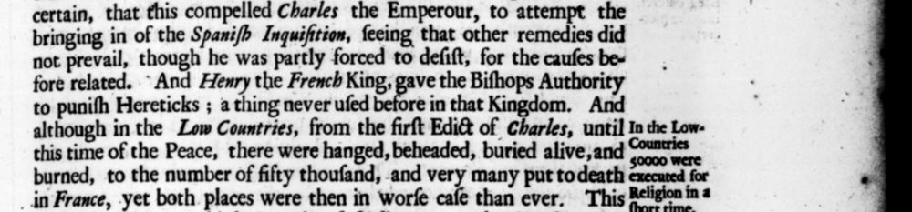

“To the number of fifty thousand” (Book V, p. 387)
English: London 1676, Book V, under 1558, p. 387, scan n512. Long s modernised; the translation’s spelling kept. Highlighted: the figure Lecky cites.

… It is certain, that this compelled Charles the Emperour, to attempt the bringing in of the Spanish Inquisition, seeing that other remedies did not prevail, though he was partly forced to desist, for the causes before related. And Henry the French King, gave the Bishops Authority to punish Hereticks; a thing never used before in that Kingdom. And although in the Low Countries, from the first Edict of Charles, until this time of the Peace, there were hanged, beheaded, buried alive, and burned, to the number of fifty thousand, and very many put to death in France, yet both places were then in worse case than ever.
The side-note reads “In the Low-Countries 50000 were executed for Religion in a short time”; the text itself speaks of the whole period from Charles’s first edict (the 1520s) to the peace of 1559. Modern historians, counting executions in the surviving records, put the number far lower; their figures are not checked here.
Further down the rabbit hole
Sources that Lecky cites in the notes next to the ones that cite this page.
- Bancroft, History of the United States, vol. IHanging Quakers in Boston, and where Lecky’s 50,000 Dutch martyrs came from
- Eymericus, Directorium inquisitorumLecky cuts the sequel to the Barcelona burning
- Llorente, Histoire critique de l’Inquisition d’EspagneHow many did the Spanish Inquisition burn? Its former secretary counts
- Motley, The Rise of the Dutch RepublicThree million people sentenced to death in three lines
- Paramo, De origine et progressu officii sanctae inquisitionisWhy the dead are tried for heresy
- Simancas, De Catholicis InstitutionibusAn inquisitor’s handbook: no faith with heretics, and torture


Backlinks
Every place in Rationalism in Europe that links to this page (generated automatically when the site is built).
- Chapter IV, Part II: note 38